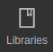

|
Anleitung
|


|
|
Anleitung
|
|
PlatformIO ist kein eigenstädniger Editor, sondern ein Plugin, welches für verschiedene Editoren verfügbar ist. Wir nutzen PlatformIO in Atom. Das ist aber für die Bedienung von PlatformIO nicht wichtig.
Anders als bei der Arduino IDE können wir nicht einfach PlatformIO öffnen und direkt drauf los programmieren, sondern müssen zuerst ein neues Projekt erstellen.
Dafür müssen wir im Home Tab von PlatformIO "New Project" wählen und das neue Projekt konfigurieren. Geöffnet wird der Home Tab mit dem Knopf
Jetzt muss das neue Projekt konfiguriert werden. Als Name sollte ein aussagekräftiger Name gewählt werden, damit das Pfojekt auch später wieder gefunden wird. Als Board wird der Typ des Arduinos angegeben, in den meisten Fällen ist das der Arduino Uno. Dies lässt sich später noch in der Konfiguration mit platformio.ini platformio.ini Datei anpassen. Als Framework MUSS Arduino ausgewählt sein. Um Github nutzen zu können, muss das Projekt im Ordner Modellbahn oder in einem seiner Unterordner gespeichert sein.
Sobald das Projekt erstellt wurde, kann in der sich im src Ordner befindenden main.cpp Datei das Programm geschrieben werden.
Die verwendeten Libraries müssen in der Konfiguration mit platformio.ini platformio.ini Datei eingetragen werden, damit sie verwendet werden können. Glücklicherweise müssen wir das aber nicht selber tun, sondern können dafür die Libraries Funktion von PlatformIO nutzen. Diese verbirgt sich im Home Tab hinter dem Knopf 
Dort können alle verfügbaren Libraries durch sucht werden und dann mit Add to Project zu einem bestimmten Projekt hinzugefügt werden. Alle nötigen Einträge in die Konfiguration mit platformio.ini platformio.ini Datei werden automatisch gemacht.
Es gibt jedoch eine Library, die dort nicht zu finden sein wird, die Modellbahn Library. Der Grund dafür ist, dass es unsere eigene ist, die wir nicht veröffentlicht haben. Um diese nutzen zu können, müssen wir dann doch in die Konfiguration mit platformio.ini platformio.ini Datei und Folgende Zeile einfügen:
Wer die schon mit Arduino programmiert hat, sollte auch mit PlatformIO zurecht kommen, da alles genau so programmiert wird wie mit der Arduino IDE.
Dieser Knopf lädt das Programm auf den Arduino hoch.

Dieser Knopf kompiliert den Code. Wenn euch das nichts sagt, ist das nicht schlimm, wichtig ist nur, dass genau das gleiche passiert wenn ihr hochladen drückt, nur ohne das das Programm auf den Arduino hochgeladen wird. Das Programm wird lediglich in eine für den Arduino verständliche Sprache übersetzt. Dabei werden auch schon die Fehler gefunden, die ein Hochladen verhindern würden.
Dieser Knopf öffnet den seriellen Monitor, über den die Ausgaben des Arduinos angezeigt werden.
In der platformio.ini Datei können im Nachhinein noch einige Konfigurationen angepasst werden und weitere hinzugefügt werden. Die wichtigsten Dabei sind das Board und die verwendeten Libraries. Um die Modellbahn Library verwenden zu können, die Library, in der schon einige häufig gebrauchten Funktionen für den Modellbau programmiert sind, muss der Github Link zu dem Repository angegeben werden. Das machen wir mit folgender Zeile: